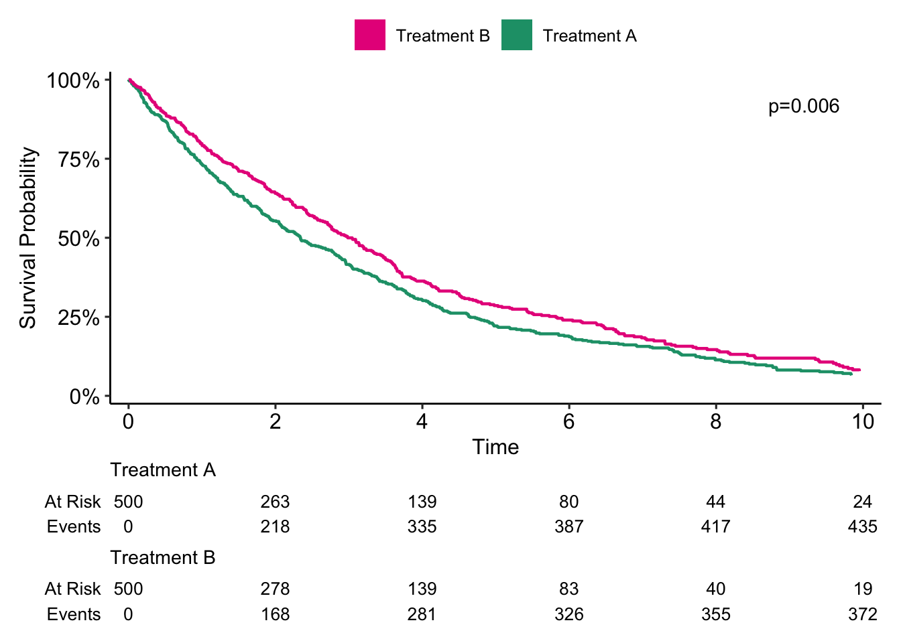
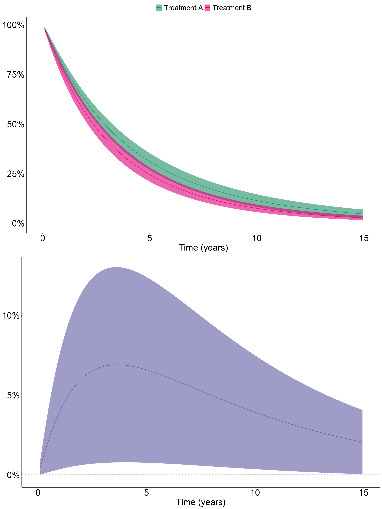

library(dplyr)
library(forcats)
library(rstpm2)
library(survival)
library(ggsurvfit)
library(ggpubr)
set.seed(12345)
n <- 1000
data <- data.frame(
age = c(sample(60:89, n/2, replace = TRUE), sample(45:74, n/2, replace = TRUE)),
treatment = as.factor(rep(c("Treatment A", "Treatment B"), each = n/2)),
sex = sample(c("Male", "Female"), n, replace = TRUE),
diabetes = sample(0:1, n, replace = TRUE)
) %>%
# Shuffle the rows to mix Treatment A and Treatment B groups
slice_sample(n = n) %>%
# Generate follow-up time, depending on treatment group and age.
mutate(follow_up_time = round(ifelse(treatment == "Treatment A",
rexp(n, rate = 1 / (1200 - (age - 45) * 4)),
rexp(n, rate = 1 / (1200 - (age - 45) * 8)))),
follow_up_time = ifelse(follow_up_time == 0, 1, follow_up_time),
follow_up_years = follow_up_time / 365.25,
# Event probability increases with age
event = rbinom(n, 1, prob = plogis((age - 45) / 10)))This post will be another example of how to perform regression standardization in a survival analysis setting, this time using the rstpm2 package. In case you didn’t see the previous post that describes what regression standardization is, look here first.
Let’s start be recreating the simulated data set from the last post.
As last time, it seems like patients who received Treatment B had better survival compared to patients who received Treatment A (p = 0.006) in crude analysis.
myCols <- c("Difference" = "#7570b3",
"Treatment A" = "#1b9e77",
"Treatment B" = "#e7298a")
survfit2(Surv(follow_up_years, event) ~ treatment, data = data) %>%
ggsurvfit(key_glyph = "rect", linewidth = 0.8) +
scale_ggsurvfit(x_scales = list(limits = c(0, 10),
breaks = seq(0, 10, by = 2))) +
add_pvalue(location = "annotation") +
theme_pubr() +
add_risktable() +
scale_color_manual(aesthetics = c("fill", "color"),
values = myCols,
breaks = c("Treatment B", "Treatment A"))
Now let’s see how the survival curves look after regression standardization.
# Fit the stpm2 flexible parametric survival model
stpm2_fit <- stpm2(Surv(follow_up_years, event) ~ treatment + age + diabetes,
data = data)
# Create an empty list to then populate with the predictions given
# the different levels of treatment
predictions <- list(1:length(levels(data$treatment)))
# Loop over the different treatment levels,
# performing prediction of type "meansurv" on each level
for(i in seq_along(levels(data$treatment))){
index <- levels(data$treatment)[i]
predictions[[i]] <- predict(stpm2_fit,
type = "meansurv",
newdata = transform(data, treatment = index),
se.fit = T,
grid = T,
full = T) %>%
bind_cols(treatment = index)
}
# Survival difference, newdata - exposed
# In this case Treatment B - Treatment A
surv_diff_plot_data <- predict(stpm2_fit,
type = "meansurvdiff", grid = T,
newdata = transform(data, treatment = "Treatment B"),
exposed = function(df) transform(df, treatment = "Treatment A"),
full = T,
se.fit = T)Let’s plot the result.
surv_plot_data <- bind_rows(predictions) %>%
mutate(treatment = as.factor(treatment))
surv_fig <- surv_plot_data %>%
ggplot(aes(x = follow_up_years, y = Estimate)) +
geom_line(aes(col = treatment)) +
geom_ribbon(aes(ymin = lower, ymax = upper, fill = treatment),
alpha = 0.6) +
scale_y_continuous(labels = scales::label_percent(accuracy = 1)) +
scale_x_continuous(limits = c(0, 15)) +
theme_pubr() +
labs(x = "Time (years)") +
theme(axis.title.y = element_blank(),
legend.title = element_blank(),
legend.position.inside = c(0.85, 0.85),
text = element_text(size = 25)) +
scale_color_manual(aesthetics = c("fill", "color"), values = myCols)
diff_fig <- surv_diff_plot_data %>%
ggplot(aes(x = follow_up_years, y = Estimate)) +
geom_line(col = myCols["Difference"]) +
geom_ribbon(aes(ymin = lower, ymax = upper),
alpha = 0.6,
fill = myCols["Difference"]) +
geom_hline(yintercept = 0, linetype = 2) +
scale_y_continuous(labels = scales::label_percent(accuracy = 1)) +
scale_x_continuous(limits = c(0, 15)) +
theme_pubr() +
labs(x = "Time (years)") +
theme(axis.title.y = element_blank(),
legend.title = element_blank(),
legend.position.inside = c(0.8, 0.8),
text = element_text(size = 25))
surv_comb <- ggarrange(surv_fig, diff_fig, ncol = 1)
surv_comb
So after regression standardization adjusting for age, it seems like Treatment A is associated with significantly improved survival compared to Treatment B.